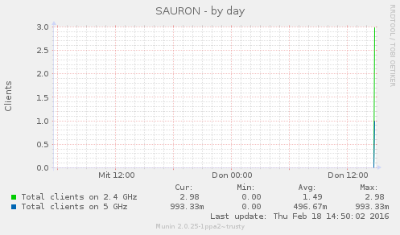
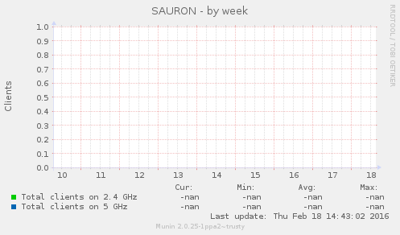
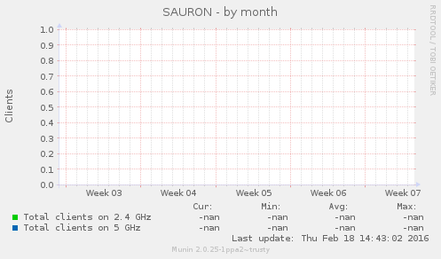
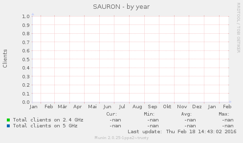

Service graphs
|  |  |
|  |  |
Graph Information
AP name/group/ip: SAURON/default-group/192.168.1.13
AP Location: identity Theft
AP Model/Serial: AIR-LAP1131AG-E-K9/FCZ1211Q28N
| Field | Internal name | Type | Warn | Crit | Info |
|---|---|---|---|---|---|
| Total clients on 2.4 GHz | clients24 | gauge | |||
| Total clients on 5 GHz | clients5 | gauge |